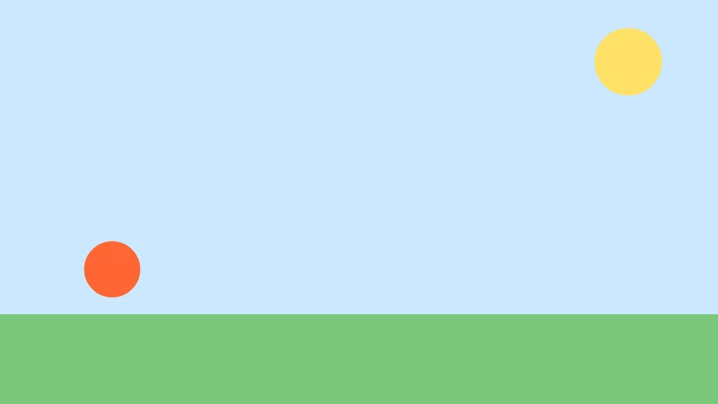

Tutorials
Motion tweens and the Motion Editor
Send a ball across the sky with a motion tween, bend its motion path, and ease it in the Motion Editor.
This page is also a lesson inside Phoenix: choose and start Motion tweens and the Motion Editor, and Phoenix points at each control as you go. It takes about 10 minutes.
To follow along here instead, download the starting document, motion-tween.fla, and open it with .

In this tutorial you will send a ball across the sky with a motion tween, bend its path into an arc, and ease it in the Motion Editor.
The document is ready: the ball is an instance of the Ball symbol, alone on its layer, with the ground on a locked layer below.
1. Make a motion tween
Click frame 1 of the Ball layer, then choose Insert > Motion Tween, or right-click the frame and choose Motion Tween.
The span turns blue and grows to one second, 24 frames. A motion tween needs a symbol instance or a text block alone on its frame.
2. Go to frame 24
Click frame 24 of the Ball layer, the last frame of the tween.
3. Move the ball
Press V for the Selection tool and drag the ball to the right side of the stage.
There is no need to add a keyframe first: changing the object inside a motion tween keys it there by itself.
4. The motion path
With the ball selected, its motion path shows on the stage: a line with a dot for each frame and a square at each keyframe.
Drag a dot in the middle of the path, between the squares, upward. The path bends into an arc, and the ball will follow it.
5. Play it
Press Enter, or click the play button in the timeline header. The ball arcs across the sky. Press it again to stop.
6. Open the Motion Editor
Choose Window > Motion Editor. It opens as a tab beside the timeline and shows the tween's properties as curves over time.
7. Pick a property
Click X in the list on the left. Its curve shows how the ball's position across the stage changes from frame 1 to 24. You can drag the points and their handles to reshape it.
8. Choose an ease
Open the Property ease list and choose Sine In Out, or another ease you like. With no point selected, it eases the whole curve.
Tween ease below it eases the whole tween at once, from -100 to 100.
9. Play it again
Click the Timeline tab and press Enter. The ball now starts gently, speeds up across the middle and settles at the end.
What you did
You made a motion tween, keyed it by moving the ball, bent its motion path, and eased it in the Motion Editor.
There are more tutorials, such as Masks and Rigging with layer parenting.
For everything this tutorial touches on, see Tweens and easing.